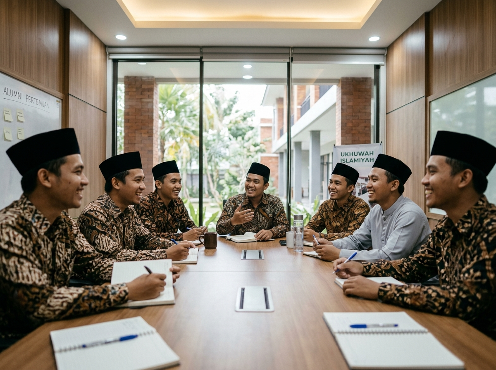

Pengalaman Interaktif
Menghubungkan Hati, Mengabdi untuk Umat & Almamater
IKASDA merancang ekosistem digital dan jaringan silaturahmi yang hidup, memudahkan santri saling bertegur sapa, berbagi peluang karir, dan mensupport adik-adik santri mukim di pondok.
Bimbingan & Mentoring Karir Alumni
Program pendampingan bagi lulusan baru untuk melanjutkan kuliah, beasiswa luar negeri, atau meniti karir profesional.
Beasiswa & Filantropi Santri Darussalam
Pengelolaan infaq dan wakaf produktif alumni untuk pembiayaan pendidikan santri yatim dan berprestasi.